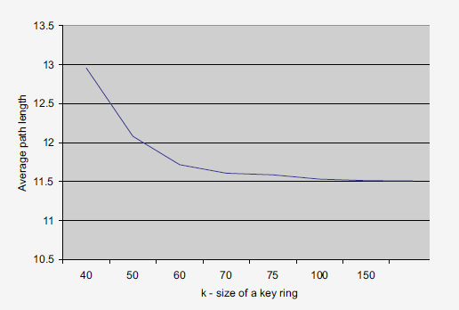

Recent extensive research in the area of wireless sensor networks has led to numerous key management schemes adapted to their specific constraints being proposed. Most existing networks, referred to as static schemes, are built on the principle of key pre-distribution, being based on the assumption of relatively static networks with average to short lifetime. Dynamic key management schemes, on the other hand, assume long-lived networks that should be able to change over time and scale better, aiming for increased security.
Most of the schemes in this category are based on a random key pre-distribution scheme introduced by Eschenauer and Gligor, where the key distribution is divided into three phases: pairwise key pre-distribution, shared-key discovery and path-key establishment.
In the key pre-distribution phase for a network with N nodes, a large pool of P keys (2^17 < P < 2^20) is generated, from which each sensor node is assigned a ring of K random distinguished keys from the pool (K << P).
In the shared-key discovery phase, each node discovers all the neighbour nodes from within its wireless communication range which share at least one of the keys in its identifier key set. The shared key thus becomes the key through which the pair of nodes is going to communicate. Taking into consideration the aforementioned notations, the probability for any two sensors to have a common key is 1 - ((P − K)!)^2/(P − 2K)!P!. The figure on the right-hand side shows graphically the probability for two nodes to share at least one key when choosing a ring of K keys from a pool of size P.
The path-key establishment is based on the fact that, probabilistically and due to the design of the algorithm, after the shared-key discovery phase each node is still going to contain a certain number of unused keys which can be used to establish further sensor paths in the network. Therefore, a path-key is assigned to selected pairs of sensor nodes that do not share any key directly, but are connected indirectly one or more links. One of these links will act as an intermediate node which can setup a pairwise key within the initial pair of sensors.
The bottom left-hand figure shows the average path length that has to be traversed in the network in order for any pair of nodes with key rings of size Kto be able to communicate. The right-hand side figure shows the average number of links in which any key in the initial pool is used.

This scheme provides scalability since, as the size of the network grows, each node has to retain in its key ring only a small number of nodes relative to the growth factor (K << P). Additionally, re-keying the nodes is straightforward because it does not involve broadcasting messages throughout the network. It is simply equivalent with a node self-revocating one of its keys and afterwards restarting the shared-key discovery and path-key establishment phases.
The Q-Composite scheme was introduced to increase the resilience of the network to attacks. In contrast to the classic scheme, it requires that two sensor nodes share at least q keys in order to establish a pairwise key during the discovery phase. This approach allegedly improves the resilience to standard small scale attacks, but is probabilistically limited to small size networks since random key pre-distribution can not guarantee a fully connected network.
A hybrid key distribution scheme suggests making use of the extensive computational capabilities of a base station compared the the rest of the nodes in the network and utilises both symmetric and public-key cryptography. Therefore, it delegates the base station to carry the heavyweight cryptographic work, while all the communication on the sensor side is built around symmetric-key communication. Elliptic curve cryptography (ECC) is preferable in this case due to the roughly small length of the keys that need to be stored by sensors.
Localized Encryption and Authentication Protocol (LEAP) provides further security requirements for various types of messages exchanged between nodes. Its underlying principle is that is no standard security requirement that prevents attacks on all levels of communication in the network. Thus, it introduces 4 keys for each node depending on how the broadcasted message might be exposed to adversaries: individual key, pairwise shared key, cluster key, group key.
The individual key is shared by each node with the base station and serves the purpose of securing the messages between the two parties. The pairwise shared key is uniquely shared with the direct neighbouring node of the current sensor and provides functionality for node to node authentication. A cluster key is shared by a node with all its neighbours, while the group key is shared among all the nodes in the network and it usually broadcasts encrypted global commands to the sensors. Since the group key is globally shared, it can easily be exposed by compromising a single node but LEAP deals with this situation by offering efficient re-keying mechanisms.
The main goal of dynamic key management schemes is to achieve a flexible network that can be able to successfully adapt to node failure or capture by adopting an efficient re-keying mechanism.
LOCK is a hierarchical protocol built on three tiers where the base station lays on top of the hierarchy, followed by cluster heads and then sensor nodes. In the deployment phase, all nodes create a set of backup keys shared only with the base station. When capture of a node occurs, all the nodes neighbouring it starts a re-keying process locally, isolating the compromised one. In the case of a cluster node being compromised, all the nodes under it in the hierarchy start the re-keying process directly with the base station.